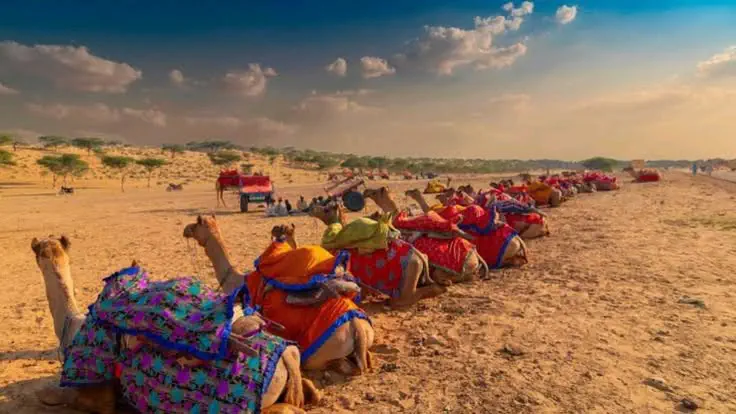
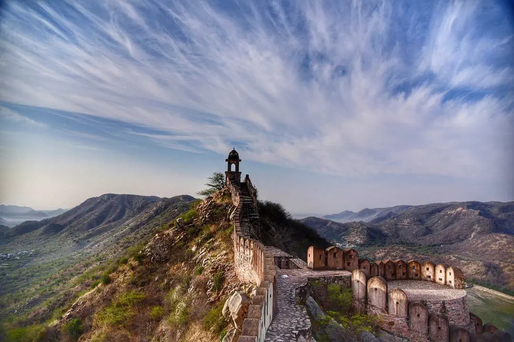
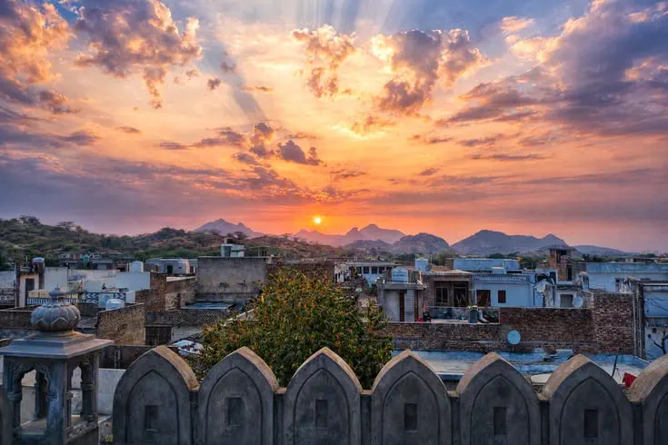
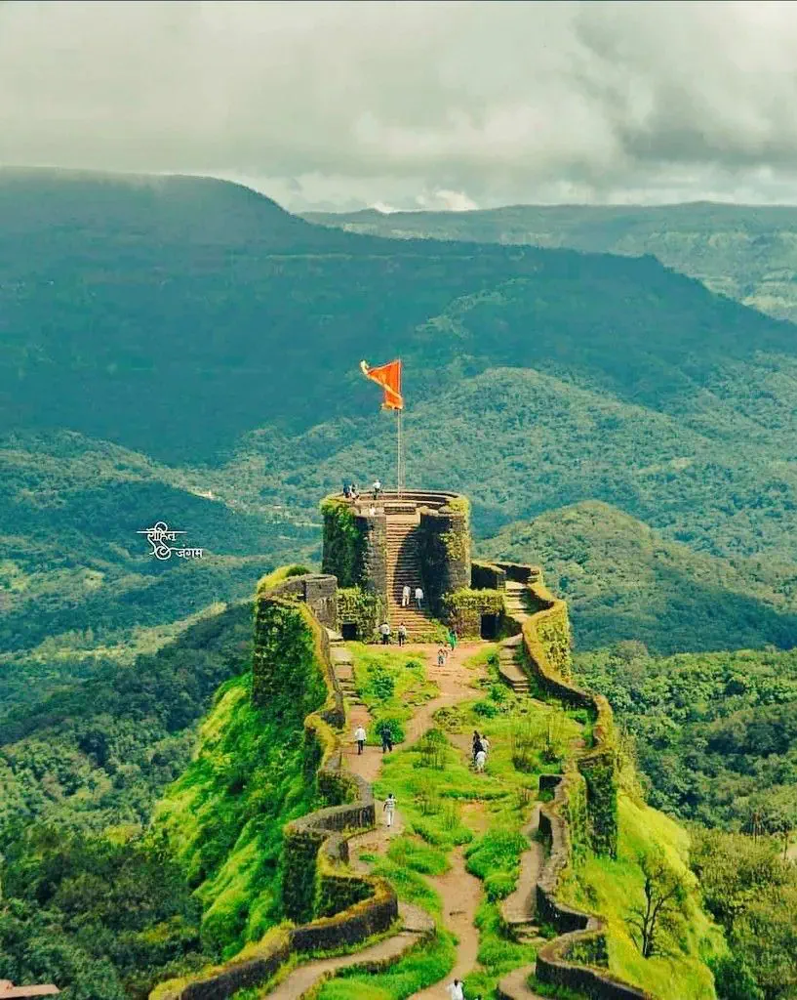
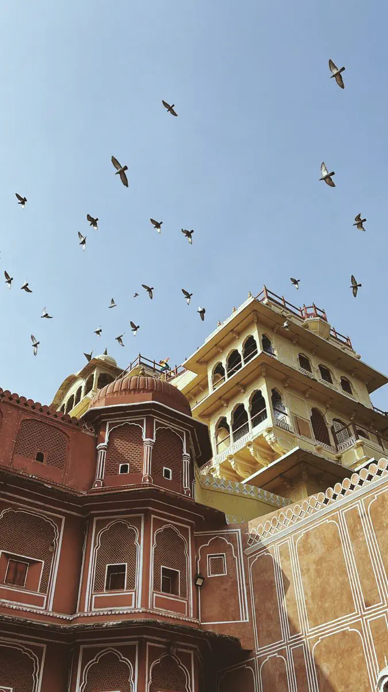

Ajmeri Gate
Named for its direction toward Ajmer, this gate opens onto some of the busiest market lanes in the old city, close to the Agarsen Market.
K. DIXON TOUR
Beawar Tourism
The destination
A trading town turned walled city, built by Colonel Dixon in 1836 and shaped by nearly two centuries of history since.
Getting to know Beawar
Beawar sits amid the Aravali hills in central Rajasthan, about 70 kilometres from Ajmer and 184 kilometres from Jaipur. Unlike the palace cities Rajasthan is known for, Beawar's character comes from its planned, grid-like colonial-era layout and its role as a 19th-century trading hub — it grew rich on raw cotton, and its old cotton-press buildings still mark the outer town.
At its centre lies the Parkota, the old Walled City, entered through four historic gates. Step past any of them and the wide colonial streets give way to narrow market lanes, temples, and havelis that have barely changed in a century.
How the town was built
The British gain control of the Ajmer-Merwara region and set up a military cantonment roughly seven kilometres from the existing village of Beawar Khas.
Colonel Charles George Dixon attracts merchants to a new bazaar on wasteland beside the cantonment, founding the settlement known as "Naya Shahar" or "Naya Nagar" — the New Town that became present-day Beawar.
Beawar's population rises quickly as it becomes a centre of the raw cotton trade, with cotton presses built through the outer town. A municipality is formally established in 1866.
The army battalion relocates to Ajmer, but Beawar's commercial importance holds — the Walled City continues to function as a major trading centre in Rajputana.
On 6 April 1996, the Mazdoor Kisan Shakti Sangathan launches a sit-in at Chang Gate demanding transparency laws — a campaign that eventually led to India's Right to Information Act, 2005. A memorial to the movement now stands at the gate.
On 7 August 2023, Beawar is officially formed as a district of Rajasthan, formalising its standing as more than a town within Ajmer's shadow.
The Walled City
The old town of Beawar is still entered through four historic gates, each opening onto a different character of the market inside.

Named for its direction toward Ajmer, this gate opens onto some of the busiest market lanes in the old city, close to the Agarsen Market.

Facing toward the historic Mewar region, this gate marks one of the quieter entrances into the Walled City's residential lanes.

Beawar's most historically significant gate — site of the 1996 sit-in that helped spark India's Right to Information movement, now marked by a memorial.

Literally the "Sun Gate," positioned to catch the first light over the old town — a favourite stop on early-morning heritage walks.
Beyond the walls
From colonial-era churches to hilltop temples, Beawar's landmarks tell the story of a genuinely mixed history.
A striking domed pavilion dedicated to Lord Shiva, standing near the bustling Agarsen Market between Ajmeri and Mewari gates. One of the most photographed landmarks in the old city.
The region's first church, built in Indo-Saracenic style in Shahpura Mohalla. A rare and well-preserved marker of Beawar's British-era past.
A significant Jain temple within the old city, reflecting Beawar's long-standing role as a centre for Jain trading families during its cotton-trade years.
Dedicated to Lord Hanuman's son, this shrine draws devotees from across the district and makes for a meaningful half-day trip from Beawar.
The city's cultural and recreational hub — a green park with rides for children, popular for family picnics and evening walks.
The heart of the old city's trade, and home to Halwai Gali — the lane famous for til patti, Beawar's signature sesame-jaggery sweet.
A sacred site for the Gurjar community, located in Masuda around 24 km from Beawar — a peaceful, less-visited stop for a longer day trip.
A central public circle that captures everyday Beawar — a good stopover to absorb local life between temple and market visits.
Culture & festivals
Beawar's calendar is marked by two standout events: the annual Tejaji Fair, a major folk festival drawing visitors from across the district, and the Gair Festival, featuring traditional Rajasthani dance performances. During Dussehra, the city holds public performances in Teliwara and near Surajpole Gate before burning an effigy of Ravana.
Winters (October to March) bring the most comfortable weather for walking the Walled City and visiting outdoor landmarks — daytime temperatures stay mild, unlike the intense summer heat that builds from April through June.
